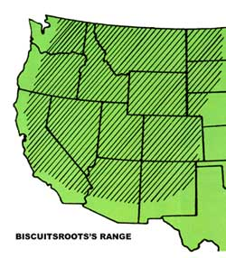
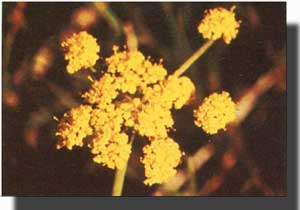
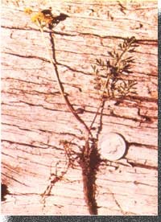

When the Lewis and Clark expedition reached Idaho's Lemhi Valley, its members were surprised to discover that the region's Shoshone tribespeople had huge, thin biscuits-about 1 foot by 2 feet-to offer in trade for the goods carried by the explorers. The large cakes-called konse-weren't actually biscuits as we know them, though ... in fact, they were prepared from the dried roots of Lomatium, a member of the Umbelliferae (carrot or parsley) family. That edible wild plant is now commonly known as biscuitroot.
And across much of western North America, today's foragers can still enjoy this spring wildling. There are approximately 80 species of Lomatium found within the plant's range (36 of these occur in California alone!) ... known by such common names as carrot leaf, fern leaf, desert parsley, parsley, konse, and whiskbroom. These small (usually between 2" and 12" tall) perennials appear in early spring ... favoring dry plains, open areas, and-in the case of at least one species-clearings among southernslope lodgepole pines. Biscuitroot can be found at elevations ranging from 3,000 to 8,000 feet (varying with latitude), and is among the first greenery to sprout in sagebrush ecosystems at the close of the winter. The plants will generally be dead-and all but impossible to locate-by early July, though ... so now's the time to look for a stand of the white, yellow, or yellow green flowered Lomatium.
The plant's roots will range from stubby, radish-shaped growths to long, slender "fingers", depending upon the species harvested. The rounder types will average from 2" to 4" in length and from 1/2" to 2" in diameter ... and the thin roots, which are often quite difficult to dig up, may be from 4" to 12" long and only 1/4" to 3/4" across. In either case, the underground "biscuits" will be covered with a thin black skin (which should be removed before they're used), and will be white and fibrous inside.
The mildly flavored roots can be boiled, roasted, or eaten raw. Or if you'd like to make a reasonable facsimile of traditional konse, you can dry your find, then grind it into a flour that can be mixed with water and shaped into a tortilla-like "biscuit".
However you prepare Lomatium, you'll find that gathering the wildling can provide a perfect excuse for stomping through the sagebrush this spring. And while you're at it, you'll be able to enjoy the seasonal rebirth of one of North America's unique ecological communities.
EDITOR'S NOTE: The parsley family also includes poison hemlock and water hemlock... two very deadly plants that do-at, certain stages-somewhat resemble Lomatium. Foragers in the West can safely harvest biscuitroot with the help of a good field guide or an experienced wildfoods enthusiast. East, erners, however, should avoid eating any plants that resemble biscuitroot.
|
 Larry J. Wells |
 Larry J. Wells |
 |